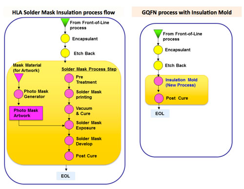

by Lee Smith [United Test and Assembly Center (UTAC)]
 Leadless lead frame based packages first saw broad adoption and industry infrastructure development with Fujitsu's introduction and licensing of its "bump chip carrier (BCC)" package in 1997 [1]. UTAC Thailand (previously NSEB) was an early licensee of the BCC technology. Over the past 17 years there have been continuous advancements in density, thickness, reliability and performance, which have resulted in leadless lead frame packages forecasted to be the largest package segment on a unit basis—approaching shipment levels of a billion per week for 2014 [2]. These leadless lead frame based packages may go by different suppliers' names, but the JEDEC designation of quad flat no lead (QFN) is the dominant package type and will be used generically in this article. The vast majority of QFN packages have a single row of perimeter pads limiting their application to low pin count devices – typically below 100.
Leadless lead frame based packages first saw broad adoption and industry infrastructure development with Fujitsu's introduction and licensing of its "bump chip carrier (BCC)" package in 1997 [1]. UTAC Thailand (previously NSEB) was an early licensee of the BCC technology. Over the past 17 years there have been continuous advancements in density, thickness, reliability and performance, which have resulted in leadless lead frame packages forecasted to be the largest package segment on a unit basis—approaching shipment levels of a billion per week for 2014 [2]. These leadless lead frame based packages may go by different suppliers' names, but the JEDEC designation of quad flat no lead (QFN) is the dominant package type and will be used generically in this article. The vast majority of QFN packages have a single row of perimeter pads limiting their application to low pin count devices – typically below 100.
This article provides the results of the recently completed 2013 MEMS Industry Commercialization Report Card Study (Report Card) [1]. The Report Card has been published annually beginning in 1998. For the establishment of the specific topics of the Report Card, market research was conducted on the general topic of technology commercialization and resulted in the selection of a number of critical success factors (aka, topics) that were considered necessary for successful commercialization specific to MEMS and to the MEMS industry.
Figure 1: WFN side lead plating flow.
The broad adoption and rapid growth of QFN packages are due to their cost and size advantages over conventional leaded packages like small outline integrated circuit (SOIC) and QFP. However, harsh environment and high-reliability applications such as automotive, have required advances in the leadless structure to enable a full solder joint fillet to enable automated optical inspection (AOI) systems to validate that all leads have a solder fillet to ensure optimum
solder joint integrity to withstand temperature cycle life solder fatigue and mechanical vibration or shock failures. To enable full solder joint fillets, saw and punch singulation processes must be advanced to ensure side wall plating of the perimeter copper lead to enable solder wetting. Figure 1 outlines the process flow with the addition of a step cut process prior to lead plating to enable plating of the side flank of the perimeter lead.
Figure 2: QFN side lead plating cross section views.
Figure 2 provides cross section views to verify control of the step cut depth and uniform thickness of the matte tin plating across the lead base and side wall flank. Cross section views are included after surface mount solderability testing to demonstrate 50% lead height and 100% lead width solder coverage. UTAC QFN packages have utilized an optimized material set and process to ensure JEDEC moisture sensitivity level 1 (MSL1) at 265°C for years. The addition of the step cut
and side lead plating has been qualified to MSL1 as well. Full UTAC internal board-level reliability results will be complete in Q4, 2014. End users for automotive applications have completed their internal qualification and UTAC is in production with side lead plated QFN packages for automotive applications. It is expected that aerospace and harsh environment industrial applications will also see the advantages that side-plated QFN leads can provide in their high-reliability applications.
Figure 3: UTAC leadless lead frame milestones.
To address higher I/O density applications, IC designers have been demanding a low-cost QFN package solution that includes interconnect trace routing to enable multi-row and full array pad configurations. A number of solutions have been developed to achieve multi-row lead density, some of which are in production with some success. Figure 3 provides a history of the milestones for new leadless lead frame solutions that UTAC introduced since its early success in BCC and adding QFN in 1999. Details of these new higher density leadless lead frame packages such as, the leadless lead frame grid array (LLGA), the thermal leadless array (TLA), and the high-density leadless array (HLA), were reported in industry publications [3–6]. Supply chain, cost, and manufacturability obstacles, however, have limited adoption and scale up of these solutions. Therefore, new approaches that utilize standard assembly processes have been sought to serve applications demanding the highest I/O density with lead frame trace routing technology. Recent advancements at UTAC show promise in overcoming these obstacles and are in the process of scale up for high-volume manufacturing. The process and materials technology advancements enable multi-row and full grid array pad densities with high-density lead routing and interconnects to serve a wide range of IC designer's single, multi-chip and passives integration configurations; the acronym GQFN will be used for grid array QFN in this article.
Key processes and GQFN configurations
Figure 4: UTAC GQFN (grid array QFN) process.
Figure 4 illustrates the key process flow and area array configurations enabled with a routable lead frame-based technology. A partially etched and pre-plated lead frame is designed, fabricated and delivered to the package assembly line where die attach and wire bond are performed. (Flip-chip, stacked die, and passive integration options are all supported but not shown here.) Following mold/post-mold cure, two critical processes are used—processes not found if standard QFN process flows are utilized. The two processes are: 1) etch back of the lead frame carrier to complete the trace routing and isolate the pre-plated leads, followed by 2) an insulation mold process to complete the package encapsulation. If the product board surface mount assembly dictates, a printed solder bump or ball drop for higher stand-off can be completed before package saw singulation.

Figure 5: Insulation mold vs. solder mask insulation.
Etch back has been used for many years in leadless lead frame production, beginning with the BCC technology. A solder mask-based lead insulation process has been introduced as a high-density leadless array (HLA) solution for area array QFNs, but as Figure 5 shows, it requires a complex multi-step process flow vs. the insulation mold process development for the GQFN package. The challenges associated with this solder mask insulation process raises cost and manufacturing challenges that are limiting adoption and scale up of the HLA solution. To address these limitations UTAC evaluated options and focused on development of an insulation mold process for GQFN. The insulation mold process poses assembly challenges as well, and overall optimization was conducted to address these challenges. A number of process and material factors had to be overcome in the development to deliver a high-volume capable insulation mold process. Factors include: 1) Mold tool design – cavity, gate, runners and air vents; 2) Film assist molding – film material and process parameters; 3) Mold clamp pressure, transfer profile and pressure; and 4) Mold material properties and fine filler technology.
Figure 6: GQFN wire bond process options.
Figure 6 illustrates the key process options available for wire bond devices. Lead frame options include 4 or 5 mil copper carriers with either NiPdAu or selective Sn plating. Die thickness is 4 mils for epoxy paste or die attach film (DAF), development is underway to enable 2 to 3 mil die thickness with the use of DAF. Wire options include Au, PdCu or Ag alloys in various wire diameters based on die bond pad openings. Mold caps range from 0.75mm for stacked die or thick component system-in-package (SiP) configurations to 0.25mm for thin package applications that require a 0.5mm maximum package thickness. Development is planned for power devices that require ribbon bonding or copper clip assembly.
Figure 7: Electrical performance comparison: QFP/QFN/GQFN.
Current designs in GQFN technology have enabled 40 to 60% reduction in package size vs. a QFN because of their ability to route leads under the die area. The higher interconnect density of this technology enables bond finger location flexibility to improve wiring diagrams to handle complex die pad layouts and multi-, stacked die, and SiP configurations. Shorter wire lengths are enabled that can provide improved electrical performance with lower inductance and capacitance as shown in Figure 7. Here the package size and electrical performance advantages are shown for GQFN vs. a QFN or QFP package with 64 leads. For RF and power management SiP applications, in addition to lower electrical parasitic performance, GQFN has shown lower thermal resistance offering both improved electrical and thermal performance vs. various design approaches to achieve improved performance in organic substrate-based land grid array (LGA) packages widely used in SiP applications.
GQFN board-level reliability (BLR)
Figure 8: a) (left) Package structure for GQFN 5x5x0.45mm, 79 leads; and b) (right) a GQFN package cross section.
Mobile applications require new package technologies to retain solder joint integrity over more stringent temperature cycle stress and drop shock use cases. To evaluate BLR for the grid array QFN technology, a 5x5x0.45mm 79-lead GQFN with a wire bonded 2.9x2.6x0.1mm die was tested. Because this 79-lead GQFN design reduces the package size by 60% vs. a QFN, the increased die-to-package ratio poses concerns on board-level reliability as the silicon coefficient of thermal expansion (CTE) mismatch between package and PCB will have a greater impact on solder joints, especially those under the die edge regions. The package structure for GQFN 5x5x0.45mm 79 leads is shown in Figure 8.
GQFN board-level reliability (BLR)
Figure 9: TCoB: Weibull plot.
The 5x5mm extremely thin (XGQFN) packages were surface-mount attached to 200x150mm boards and subjected to accelerated life tests to determine their second-level reliability. The temperature cycling accelerated test condition was -40°C to 125°C with 15mins dwell/ramp. The Weibull plot (Figure 9) shows the characteristic life, which is defined as the number of life cycles at which 63.2% of the test components have failed. Although the die-to-package ratio is very high at 58%, the XGQFN 5x5mm had excellent TCoB performance with the first failure at 2,680 cycles and a characteristic life of 4,600 cycles (Figure 9).
Board-level drop test
Figure 10: Drop test: Weibull plot.
Demanding handset use cases are driving mechanical drop shock resistance targets up, with customers requiring data up to 1,000 drop cycles. XGQFN 5x5mm packages were mounted on a 132x77x1.0mm 8-layer board, which was designed to form an integrated daisy-chain. The test method is composed of free-fall dropping the board using a drop table from a specified height that corresponds to JEDEC Condition B (1500 Gs, 0.5ms duration, half-sine pulse) as listed in JESD22-B110, Table 1. The XGQFN 5x5mm package had excellent drop performance with the first failure at 470 cycles with a characteristic life of 950 cycles that passed mobile customers' harsh test criteria (Figure 10).
Figure 11: FC with copper pillar bumps in GQFN.
The density advantages of using flip-chip in QFN packages combined with copper pillar bumping will combine to enable a wider range of devices and applications to take advantage of the size, thermal and electrical performance advantages that are inherent with flip-chip packaging. Figure 11 shows a cross section of a design that utilizes flip-chip copper pillars in a GQFN package to provide a unique arrangement of thermal pads and signal lands. The design achieves a small package with a high die-to-package size ratio along with good thermal and electrical performance.
Summary
Advances in leadless lead frame assembly, materials and process technologies enable QFN packages to address challenging application and device requirements through improved reliability and higher I/O densities. The addition of a step cut process before lead plating enables plating of the lead side wall flank to improve solder joint integrity and AOI inspection through the formation of a full solder fillet. This improvement allows QFN packages to be utilized in harsh or higher temperature applications to better serve the high-reliability requirements driven by the automotive market. The development of an insulation mold process addresses and resolves many of the manufacturing challenges that have been limiting the adoption and applications for multi-row and area array QFN packages. The combination of robust etch back and insulation mold processes enable higher I/O density and design flexibility in QFN packages that allow grid array QFN (GQFN) packages to address designs that, to date, have required a 2 to 4 layer organic laminate fine-pitch ball grid array (FBGA) or LGA package. GQFN technology allows flip-chip, stacked die and passive integration into low-cost lead frame-based packaging to fuel continued growth in leadless lead frame applications.
Aknowledgements
The author thanks Jun Dimaano Jr. of UTAC Singapore, corporate R&D, and Saravuth Sirinorakul of UTAC Thailand, site R&D.
References
[1] K. Tsuji, "Bump chip carrier (BCC)," Proc. of Third International Assy and Packaging Foundry Conf. (APCON), Sunnyvale, CA, Sept. 1997.
[2] M. Stromberg, J. Walker, "Forecast: semiconductor package unit demand worldwide, 2H 2013 Update," Gartner, Feb. 2014.
[3] N. Fan, N. Mclellan, "Lead-frame CSP," Advanced Packaging Magazine -Trends in CSP, July 2003.
[4] K. McKendrick, "Thin QFN, TAPP & FBGA," MEPTEC Report Q2 2008, Thin Package Technology.
[5] K. McKendrick, S. Pedron, "High-density lead frame array (HLA)," MEPTEC Report, Spring 2011.
[6] K. McKendrick, S. Pedron, "TLA Alternative to QFN," MEPTEC Report, Fall 2011.
Biography
Lee Smith received his BSc degree in Industrial Technology from the U. of Wis.-Stout in 1980, and is VP of Marketing at United Test and Assembly Center (UTAC); email lee_smith@utacgroup.com